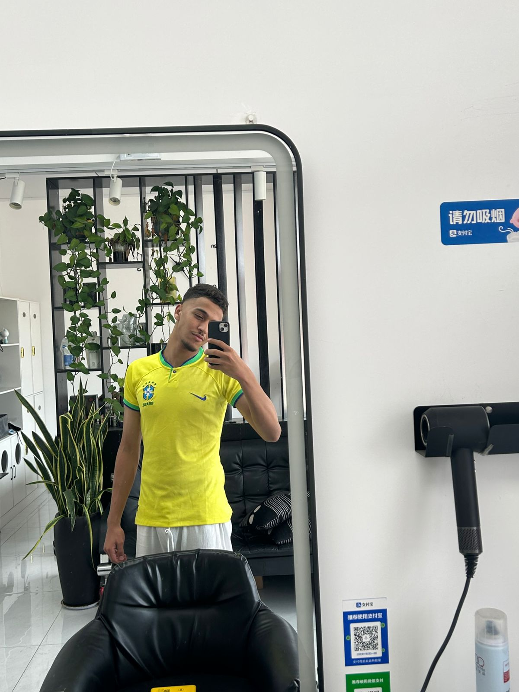

Computer Science Student

Hello. My name is AZELARAB ESSYAGH. I am a computer science student at Weifang University of Science and Technology. I enjoy programming and learning web development.
I started studying computer science because I like technology and programming. During my university studies, I learned many programming languages such as C programming, Python, HTML, and CSS. I also learned how websites are built and how software works.
In the beginning programming was difficult for me because there were many new concepts to understand. However, after practicing every week and completing exercises, I improved my skills and became more confident.
During the web programming course, I learned how to create webpages using HTML and CSS. I learned how to add images, tables, forms, links, videos, and navigation menus. I also learned how to style websites and make them more attractive.
During the C programming course, I learned variables, loops, functions, arrays, pointers, and file handling. These topics improved my logical thinking and problem-solving ability.
I also used online learning platforms such as HackerRank and SoloLearn to practice coding outside the classroom. These platforms helped me improve my programming knowledge and gain more experience.
University life also taught me teamwork, communication, and time management. Completing projects and assignments helped me become more organized and responsible.
In the future, I want to continue learning advanced programming technologies and become a professional software developer. I believe programming is an important skill that creates many opportunities in the future.
Email: azearabrajawi120@gmail.com